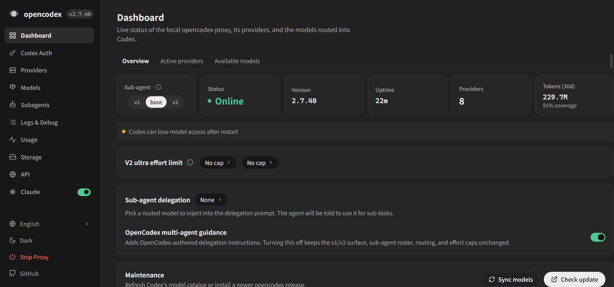
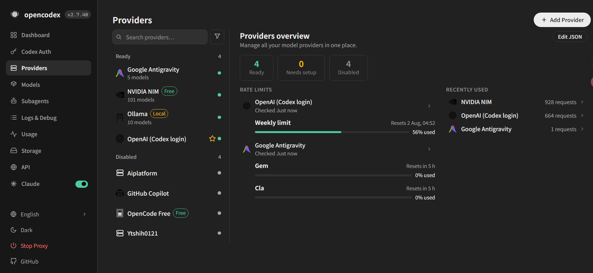
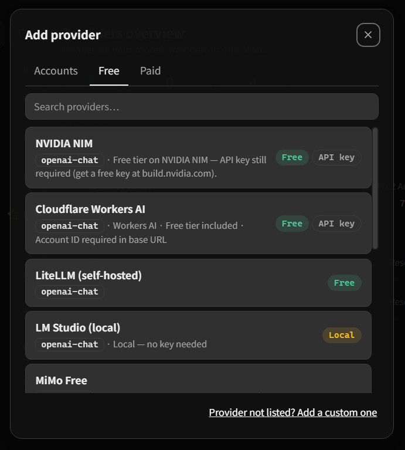
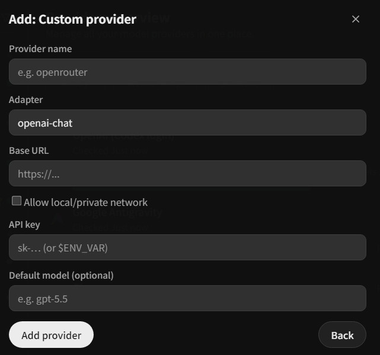
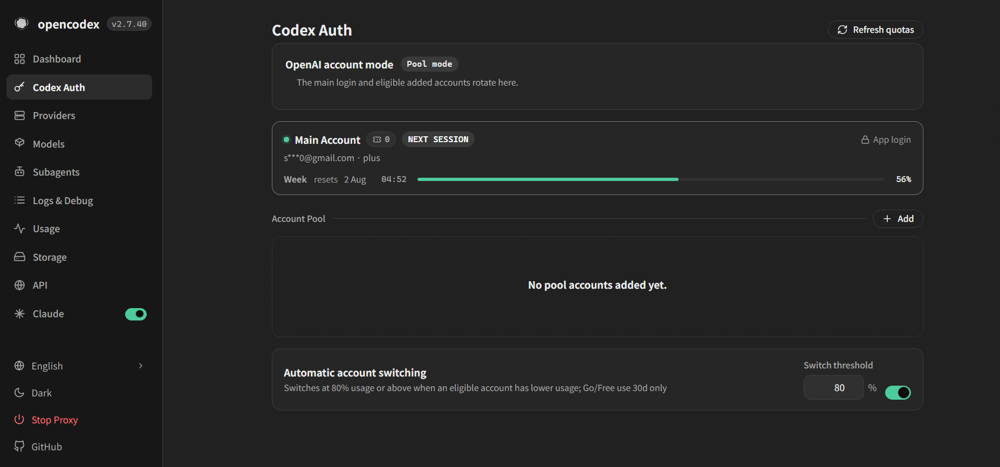
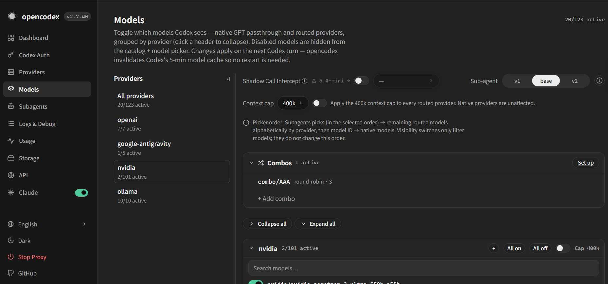
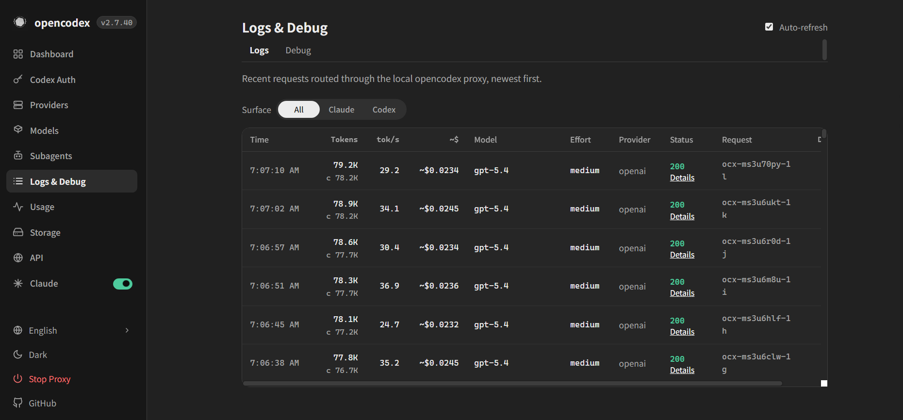
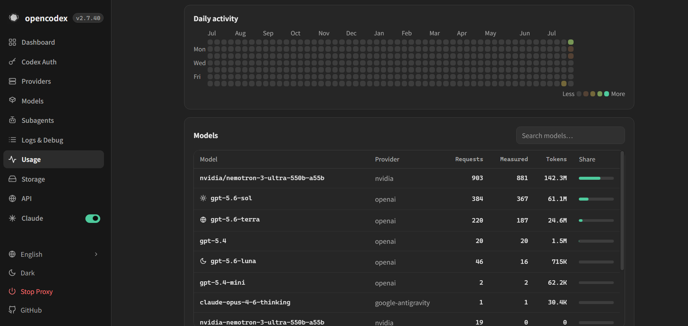
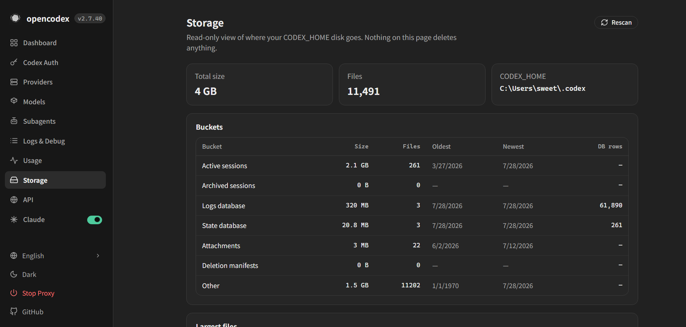

使用者介面
Codex CLI、Codex App、SDK、Claude Code 等既有工作介面。
Verified Bilingual Learning Guide
OpenCodex 是在本機執行的模型代理層，可讓 Codex、Claude Code 等前端透過同一個連接埠使用不同 Provider。本教材以官方規格為主、實際 Dashboard 截圖為證，從安裝開始建立可查核、可回復的操作流程。
PS> npm install -g @bitkyc08/opencodex
PS> ocx init
PS> ocx start
PS> ocx gui
proxy online
endpoint http://localhost:10100
workflow inspect → route → verify01 · Concept
AI 開發工具常同時受到模型與 API 格式限制。OpenCodex 接收 Codex Responses API 或 Claude Messages API，將串流、工具調用、推理標記與影像轉換成目標 Provider 可接受的協定。它處理的是「請求送去哪裡」，不是替代人的任務設計與成果驗收。
Codex CLI、Codex App、SDK、Claude Code 等既有工作介面。
協定翻譯、模型目錄、Provider 路由、帳號池、日誌與用量統計。
Anthropic、Google、xAI、Kimi、Ollama、OpenRouter、Azure 與自訂相容端點。
使用 provider/model 明確指定來源；省略 Provider 時，依預設值或模型名稱規則匹配。
既有工作階段維持原帳號；新工作可依健康狀態與配額選擇合格帳號。
以 Logs、Usage 與輸出檔案確認實際執行狀態，不把「Online」誤認為任務完成。
02 · Quickstart
目前上游版本採 npm 安裝，Windows x64 需要 Node.js 18 以上。Bun runtime 由套件帶入；若 npm 阻擋安裝腳本，應依官方 README 使用允許 Bun 腳本的安裝方式，而不是沿用舊版的 Go、Docker 或 8080 教學。
以使用者可寫入的 Node/npm 環境進行全域安裝。
npm install -g @bitkyc08/opencodexocx init 會寫入 Codex Provider 並提供自動啟動選項；ocx stop 可恢復原生 Codex 設定。
ocx init
ocx start
ocx gui取得模型目錄只能證明代理已回應，仍需送出一個小型任務並檢查 Logs。
Invoke-RestMethod http://localhost:10100/v1/models在 Dashboard 選擇內建 Provider，或建立自訂 OpenAI 相容端點。只有連接本機或區域網路服務時，才允許 private network。
03 · Interface Evidence
以下圖片均為 2026 年 7 月 28 日的本機實際操作截圖，已確認未顯示 API Key、Token 或 Cookie。畫面可能隨上游版本更新，操作時應以官方文件和目前介面為準。點選圖片可放大。

先確認 Proxy、版本、Provider 與模型同步狀態，再開始測試。

管理 Adapter、Base URL、認證方式、可用模型與啟用狀態。

可從 Accounts、Free、Paid 分類選擇，或進入自訂端點。

填寫名稱、Adapter、Base URL 與安全保存的認證資訊。

觀察帳號健康狀態、工作階段親和性與配額視窗；截圖中的信箱已遮罩。

核對公開名稱、推理強度、context window、工具與視覺能力。

以 Request ID、實際模型、狀態碼、Token 與延遲驗證路由。

追蹤成功率、延遲與異常流量，找出迴圈請求或提示詞過長問題。

教學與行政使用都應設定日誌保留、備份、遮罩、下載與刪除流程。
04 · Routing
路由的重點不是一次加入最多模型，而是讓任務、資料風險、模型能力與驗收成本相符。對重要工作使用明確的 provider/model，並在日誌確認實際路由。
codex -m "anthropic/claude-opus-5" "解釋這段錯誤紀錄"
codex -m "google/gemini-3-pro" "為 auth.ts 撰寫單元測試"
codex -m "ollama/llama3" "重構這個函式"適合需要較強模型能力的任務，但須確認費用、資料政策、可用地區與服務條款。
可讓模型推論留在本機，但工具調用、context 與品質仍需逐項驗證。
適合自建服務或組織內部端點；不得在教材或程式庫中寫死金鑰。
05 · Learning Workflow
教材不以完成安裝為終點，而是要求學習者經歷觀察、假設、路由、執行、查核與反思。這能避免只記住按鈕位置，也能在版本更新後保留問題解決能力。
選一個低風險程式重構任務，先寫出驗收標準，再分別使用雲端與本機模型。比較正確性、工具調用、延遲與 Token，而非只比較文字風格。
使用不存在的模型名稱或停用 Provider，觀察 `/v1/models`、Logs 與錯誤碼。把故障定位步驟寫成可重複的檢查表。
ocx stop 回復原生設定06 · Sources
NotebookLM 彙整了 6 個指定來源。本頁再以 2026 年 7 月 28 日的本機操作截圖補充介面證據。技術規格優先依官網與 GitHub；媒體、X 與影片僅補充介紹與學習方式。
07 · FAQ
遇到設定差異時，先確認上游版本，再比對 Dashboard、模型目錄與請求日誌。
不是。OpenCodex 是獨立社群專案，並未獲 OpenAI、Anthropic 或其他模型供應商背書。連接第三方服務前應查閱各 Provider 的服務條款。
本教材依目前官網與 GitHub README，使用 localhost:10100。OpenCodex 更新速度快，安裝前應重新查閱上游文件，不應直接套用舊教學。
不代表。Online 只表示代理可連線。完整驗收還要確認實際 Provider、模型、HTTP 狀態碼、輸出檔案及任務測試。
不一定。必須確認實際路由指向本機服務，且工作流程沒有同時呼叫雲端搜尋、sidecar 或其他外部工具。應以 Logs 與網路設定查核。